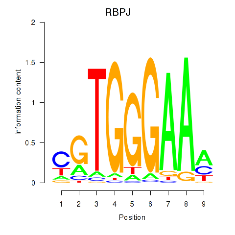

Motif ID: RBPJ
Z-value: 0.623
Transcription factors associated with RBPJ:
| Gene Symbol | Entrez ID | Gene Name |
|---|---|---|
| RBPJ | ENSG00000168214.16 | RBPJ |
![](http://string-db.org/api/image/network?network_flavor=evidence&limit=0&species=9606&caller_identity=MARA&identifiers=9606.ENSP00000379568%0D9606.ENSP00000457330%0D9606.ENSP00000278601%0D9606.ENSP00000232424%0D9606.ENSP00000350512%0D9606.ENSP00000265299%0D9606.ENSP00000363556%0D9606.ENSP00000369943%0D9606.ENSP00000271620%0D9606.ENSP00000323720%0D9606.ENSP00000431482%0D9606.ENSP00000357348%0D9606.ENSP00000280684%0D9606.ENSP00000263205%0D9606.ENSP00000250495%0D9606.ENSP00000241124%0D9606.ENSP00000265741%0D9606.ENSP00000346389%0D9606.ENSP00000324792%0D9606.ENSP00000442308%0D9606.ENSP00000267853%0D9606.ENSP00000294288%0D9606.ENSP00000338864%0D9606.ENSP00000260637%0D9606.ENSP00000279386%0D9606.ENSP00000296135%0D9606.ENSP00000333744%0D9606.ENSP00000436500%0D9606.ENSP00000395220%0D9606.ENSP00000374219%0D9606.ENSP00000249396%0D9606.ENSP00000320516%0D9606.ENSP00000337852%0D9606.ENSP00000354669%0D9606.ENSP00000240986%0D9606.ENSP00000366387%0D9606.ENSP00000263266%0D9606.ENSP00000446121%0D9606.ENSP00000452871%0D9606.ENSP00000262854%0D9606.ENSP00000351552%0D9606.ENSP00000333836%0D9606.ENSP00000346964%0D9606.ENSP00000233154%0D9606.ENSP00000299492%0D9606.ENSP00000324806%0D9606.ENSP00000339004%0D9606.ENSP00000253571%0D9606.ENSP00000261921%0D9606.ENSP00000319744%0D9606.ENSP00000332549%0D9606.ENSP00000343479%0D9606.ENSP00000268712%0D9606.ENSP00000368976%0D9606.ENSP00000280155%0D9606.ENSP00000291577%0D9606.ENSP00000265371%0D9606.ENSP00000356655%0D9606.ENSP00000275230%0D9606.ENSP00000349654%0D9606.ENSP00000404432%0D9606.ENSP00000365131%0D9606.ENSP00000296473%0D9606.ENSP00000288228%0D9606.ENSP00000357905%0D9606.ENSP00000262873%0D9606.ENSP00000332973%0D9606.ENSP00000295824%0D9606.ENSP00000333926%0D9606.ENSP00000358327%0D9606.ENSP00000356382%0D9606.ENSP00000381932%0D9606.ENSP00000253458%0D9606.ENSP00000334072%0D9606.ENSP00000367638%0D9606.ENSP00000360231%0D9606.ENSP00000367348%0D9606.ENSP00000330060%0D9606.ENSP00000313007%0D9606.ENSP00000262370%0D9606.ENSP00000340913%0D9606.ENSP00000366894%0D9606.ENSP00000325128%0D9606.ENSP00000355968%0D9606.ENSP00000354453%0D9606.ENSP00000262269%0D9606.ENSP00000237172%0D9606.ENSP00000376421%0D9606.ENSP00000379475%0D9606.ENSP00000340874%0D9606.ENSP00000300433%0D9606.ENSP00000414512%0D9606.ENSP00000345512%0D9606.ENSP00000309555%0D9606.ENSP00000405165%0D9606.ENSP00000359345%0D9606.ENSP00000346265%0D9606.ENSP00000354033%0D9606.ENSP00000359240%0D9606.ENSP00000319817%0D9606.ENSP00000291442)
{kind=link}
{kind=link}
{kind=link}
{kind=link}
{kind=link}
Top targets:
Gene overrepresentation in biological_process category:
| Log-likelihood per target | Total log-likelihood | Term | Description |
|---|---|---|---|
| 0.3 | 2.9 | GO:0072734 | response to staurosporine(GO:0072733) cellular response to staurosporine(GO:0072734) |
| 0.2 | 1.2 | GO:0014043 | negative regulation of neuron maturation(GO:0014043) |
| 0.1 | 0.6 | GO:1902378 | vestibulocochlear nerve structural organization(GO:0021649) positive regulation of cytokine activity(GO:0060301) ganglion morphogenesis(GO:0061552) VEGF-activated neuropilin signaling pathway involved in axon guidance(GO:1902378) dorsal root ganglion morphogenesis(GO:1904835) otic placode development(GO:1905040) |
| 0.1 | 0.3 | GO:0033058 | directional locomotion(GO:0033058) |
| 0.1 | 0.2 | GO:0071109 | superior temporal gyrus development(GO:0071109) |
| 0.1 | 0.3 | GO:0035905 | ascending aorta development(GO:0035905) ascending aorta morphogenesis(GO:0035910) |
| 0.1 | 0.5 | GO:0061767 | negative regulation of lung blood pressure(GO:0061767) |
| 0.1 | 0.8 | GO:0043951 | negative regulation of cAMP-mediated signaling(GO:0043951) |
| 0.1 | 0.2 | GO:0070446 | cellular response to caloric restriction(GO:0061433) negative regulation of oligodendrocyte progenitor proliferation(GO:0070446) |
| 0.0 | 0.7 | GO:0043152 | induction of bacterial agglutination(GO:0043152) |
| 0.0 | 0.2 | GO:0018277 | protein deamination(GO:0018277) |
| 0.0 | 0.2 | GO:2000435 | regulation of protein neddylation(GO:2000434) negative regulation of protein neddylation(GO:2000435) |
| 0.0 | 0.1 | GO:0072361 | regulation of glycolytic process by regulation of transcription from RNA polymerase II promoter(GO:0072361) |
| 0.0 | 0.1 | GO:0019046 | release from viral latency(GO:0019046) |
| 0.0 | 0.7 | GO:0050965 | detection of temperature stimulus involved in sensory perception(GO:0050961) detection of temperature stimulus involved in sensory perception of pain(GO:0050965) |
| 0.0 | 0.2 | GO:0045218 | zonula adherens maintenance(GO:0045218) |
| 0.0 | 0.1 | GO:1903568 | negative regulation of protein localization to cilium(GO:1903565) regulation of protein localization to ciliary membrane(GO:1903567) negative regulation of protein localization to ciliary membrane(GO:1903568) |
| 0.0 | 0.2 | GO:2000002 | negative regulation of DNA damage checkpoint(GO:2000002) |
| 0.0 | 0.2 | GO:0032876 | negative regulation of DNA endoreduplication(GO:0032876) |
| 0.0 | 0.1 | GO:2001137 | positive regulation of endocytic recycling(GO:2001137) |
| 0.0 | 0.0 | GO:0006624 | vacuolar protein processing(GO:0006624) |
| 0.0 | 0.1 | GO:0003172 | primary heart field specification(GO:0003138) sinoatrial valve development(GO:0003172) sinoatrial valve morphogenesis(GO:0003185) |
| 0.0 | 0.1 | GO:1903660 | cellular response to mercury ion(GO:0071288) negative regulation of complement-dependent cytotoxicity(GO:1903660) |
| 0.0 | 0.1 | GO:1904327 | protein localization to cytosolic proteasome complex(GO:1904327) protein localization to cytosolic proteasome complex involved in ERAD pathway(GO:1904379) |
| 0.0 | 0.1 | GO:0036493 | positive regulation of translation in response to endoplasmic reticulum stress(GO:0036493) |
| 0.0 | 0.2 | GO:0002098 | tRNA wobble uridine modification(GO:0002098) |
| 0.0 | 0.1 | GO:0061687 | detoxification of inorganic compound(GO:0061687) stress response to metal ion(GO:0097501) |
| 0.0 | 0.0 | GO:0006391 | transcription initiation from mitochondrial promoter(GO:0006391) |
| 0.0 | 0.1 | GO:0060648 | mammary gland bud morphogenesis(GO:0060648) |
| 0.0 | 0.1 | GO:0032971 | regulation of muscle filament sliding(GO:0032971) |
Gene overrepresentation in cellular_component category:
| Log-likelihood per target | Total log-likelihood | Term | Description |
|---|---|---|---|
| 0.1 | 0.6 | GO:0097443 | sorting endosome(GO:0097443) |
| 0.0 | 0.5 | GO:0071144 | SMAD2-SMAD3 protein complex(GO:0071144) |
| 0.0 | 0.7 | GO:0042589 | zymogen granule membrane(GO:0042589) |
| 0.0 | 0.1 | GO:0097513 | myosin II filament(GO:0097513) |
| 0.0 | 0.1 | GO:0020018 | ciliary pocket(GO:0020016) ciliary pocket membrane(GO:0020018) |
| 0.0 | 0.1 | GO:0005879 | axonemal microtubule(GO:0005879) |
| 0.0 | 0.1 | GO:0070847 | core mediator complex(GO:0070847) |
| 0.0 | 0.2 | GO:0005688 | U6 snRNP(GO:0005688) |
| 0.0 | 0.1 | GO:1990769 | proximal neuron projection(GO:1990769) |
| 0.0 | 0.3 | GO:0017146 | NMDA selective glutamate receptor complex(GO:0017146) |
| 0.0 | 0.2 | GO:0072687 | meiotic spindle(GO:0072687) |
| 0.0 | 0.2 | GO:1990909 | Wnt signalosome(GO:1990909) |
| 0.0 | 0.1 | GO:0071818 | BAT3 complex(GO:0071818) ER membrane insertion complex(GO:0072379) |
| 0.0 | 0.0 | GO:0070195 | growth hormone receptor complex(GO:0070195) |
Gene overrepresentation in molecular_function category:
| Log-likelihood per target | Total log-likelihood | Term | Description |
|---|---|---|---|
| 0.1 | 2.9 | GO:0097200 | cysteine-type endopeptidase activity involved in execution phase of apoptosis(GO:0097200) |
| 0.1 | 0.5 | GO:0031962 | mineralocorticoid receptor binding(GO:0031962) |
| 0.1 | 0.2 | GO:0046970 | NAD-dependent histone deacetylase activity (H4-K16 specific)(GO:0046970) |
| 0.0 | 0.6 | GO:0038085 | vascular endothelial growth factor binding(GO:0038085) |
| 0.0 | 0.6 | GO:0004887 | thyroid hormone receptor activity(GO:0004887) |
| 0.0 | 0.1 | GO:0031862 | prostanoid receptor binding(GO:0031862) |
| 0.0 | 0.3 | GO:0004972 | NMDA glutamate receptor activity(GO:0004972) |
| 0.0 | 0.2 | GO:0030621 | U4 snRNA binding(GO:0030621) |
| 0.0 | 0.2 | GO:0016300 | tRNA (uracil) methyltransferase activity(GO:0016300) |
| 0.0 | 0.1 | GO:0005136 | interleukin-4 receptor binding(GO:0005136) |
| 0.0 | 0.7 | GO:0008329 | signaling pattern recognition receptor activity(GO:0008329) pattern recognition receptor activity(GO:0038187) |
| 0.0 | 1.3 | GO:0001102 | RNA polymerase II activating transcription factor binding(GO:0001102) |
| 0.0 | 0.2 | GO:1990948 | ligase inhibitor activity(GO:0055104) ubiquitin ligase inhibitor activity(GO:1990948) |
| 0.0 | 0.1 | GO:0005483 | soluble NSF attachment protein activity(GO:0005483) |
| 0.0 | 0.1 | GO:0019784 | NEDD8-specific protease activity(GO:0019784) |
Gene overrepresentation in C2:CP category:
| Log-likelihood per target | Total log-likelihood | Term | Description |
|---|---|---|---|
| 0.1 | 3.0 | SA_CASPASE_CASCADE | Apoptosis is mediated by caspases, cysteine proteases arranged in a proteolytic cascade. |
| 0.0 | 0.6 | PID_VEGF_VEGFR_PATHWAY | VEGF and VEGFR signaling network |
Gene overrepresentation in C2:CP:REACTOME category:
| Log-likelihood per target | Total log-likelihood | Term | Description |
|---|---|---|---|
| 0.1 | 2.9 | REACTOME_CASPASE_MEDIATED_CLEAVAGE_OF_CYTOSKELETAL_PROTEINS | Genes involved in Caspase-mediated cleavage of cytoskeletal proteins |
| 0.0 | 0.6 | REACTOME_VEGF_LIGAND_RECEPTOR_INTERACTIONS | Genes involved in VEGF ligand-receptor interactions |
| 0.0 | 0.4 | REACTOME_SIGNALING_BY_NODAL | Genes involved in Signaling by NODAL |